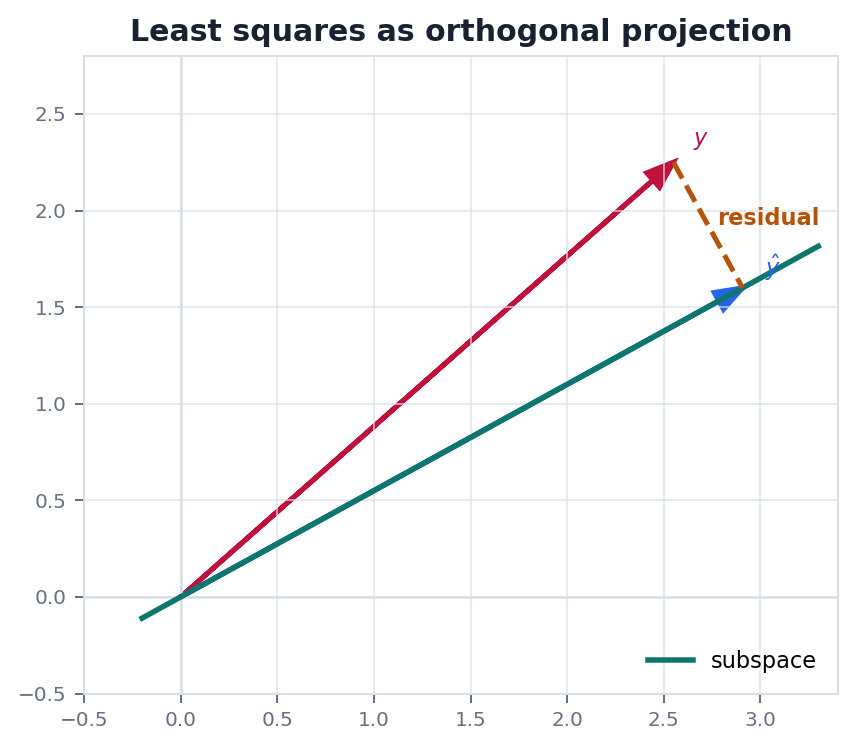
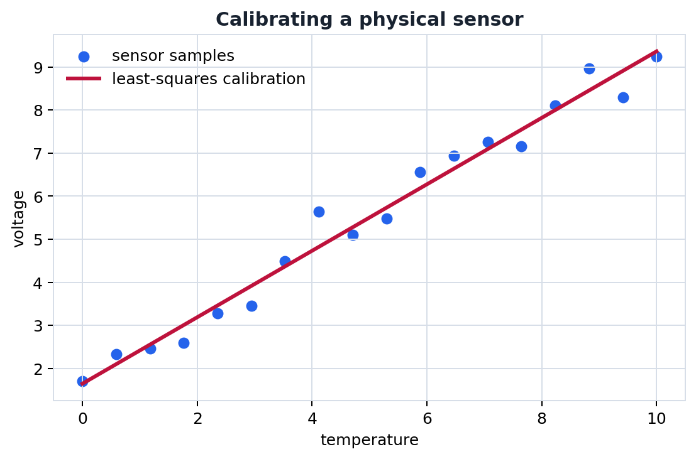

Route
0. 全章主线
有了内积, 线性代数就能谈最近, 最垂直和最佳近似.
内积定义长度和角度.
正交方向互不干扰.
投影找最近的子空间点.
最小二乘无精确解时找最佳近似.
QR用正交基稳定计算.
Metric
1. 内积, 范数和距离
内积把代数空间变成几何空间.
$$
\langle x,y\rangle=x^Ty,\quad \|x\|=\sqrt{\langle x,x\rangle},\quad d(x,y)=\|x-y\|
$$
正交的定义是 $\langle x,y\rangle=0$. 如果一组非零向量两两正交, 它们一定线性无关, 因为每个方向都无法由其他方向拼出来.
边界正交依赖内积. 换一个内积, "垂直" 的含义可能随之改变. 这在带权最小二乘和物理能量内积中很常见.
Projection
2. 正交投影
投影点是子空间中离目标最近的点, 残差与子空间正交.
若 $S$ 是一个子空间, $y$ 到 $S$ 的投影 $\hat y$ 满足 $y-\hat y$ 与 $S$ 中所有向量正交. 若 $S$ 由矩阵 $A$ 的列空间给出, 则最小二乘解满足法方程:
$$
A^T(A\hat x-y)=0\Rightarrow A^TA\hat x=A^Ty
$$
这不是凭空出现的公式, 而是"残差垂直于所有可调整方向"的代数表达.
Orthogonalization
3. Gram-Schmidt 和 QR
把一组独立向量改造成标准正交基, 能显著简化投影和求解.
$$
q_k=\frac{v_k-\sum_{j
把矩阵列向量正交化, 就得到 $A=QR$. 其中 $Q$ 的列标准正交, $R$ 是上三角矩阵. 数值计算里, QR 通常比直接解法方程更稳定.
Geometry
4. 几何图像: 投影和传感器拟合
最小二乘本质上是把无法精确命中的目标投影到可达子空间.


Physics
5. 物理问题: 测量校准和误差最小化
实验数据有噪声时, 精确解通常不存在, 最小二乘给出可解释的最佳近似.
问题传感器输出电压 $v$ 与温度 $T$ 近似满足 $v=aT+b$, 但每次测量都有噪声. 需要从多组样本估计 $a,b$.
$$
\min_{a,b}\sum_{i=1}^m (aT_i+b-v_i)^2
$$
这个目标函数正是在最小化残差向量的长度. 当噪声近似独立同分布且方差相同, 最小二乘还有统计意义上的合理性.
Checklist
6. 实战清单与易错点
投影问题要先识别子空间, 再写正交条件.
实战清单
- 目标向量是什么?
- 可达子空间由哪些列向量张成?
- 残差应与哪些方向正交?
- 列满秩条件是否满足?
- 是否应使用 QR 而不是法方程?
高频错误
- 把投影公式用于非标准正交基.
- 把最小二乘解当成精确解.
- 忽略 $A^TA$ 可能病态.
- 忘记残差垂直的是列空间, 不是原始数据轴.
记住最小二乘就是投影. 残差正交是公式背后的核心句子.